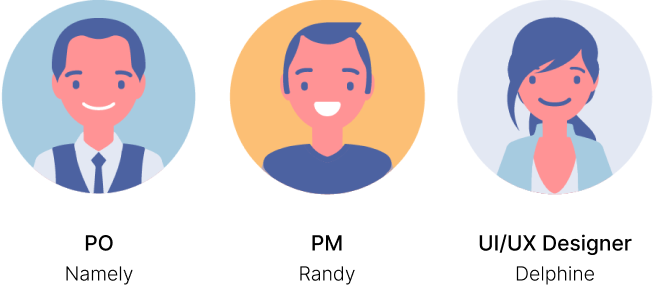
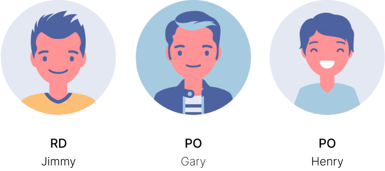
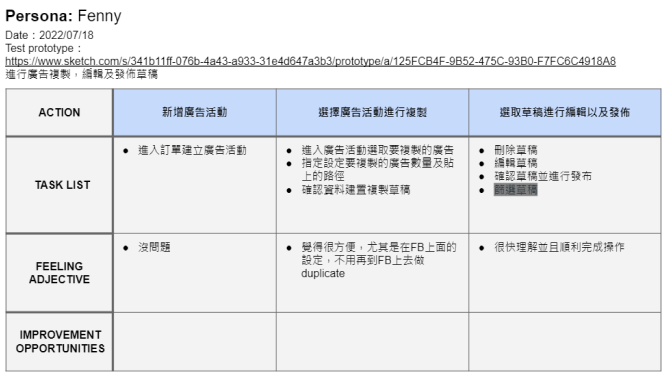
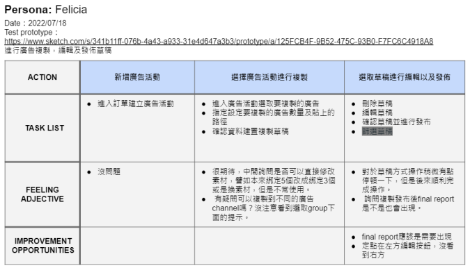

Project: Campaign Duplicate
UI/UX design
GoGan is a DSP system for Gojek. Integrate advertsing platform such as Google, Facebook and Gojek. Effectively assist merchants to formulate various sizes of digital marketing plans according to their needs, make advertisers to view the advertising effects of different platforms at once.
▪ Organize and manage gogan design guideline.
▪ Optimize user experience.
▪ Plan the experience flow and design the user interface of new fuctions.
▪ Present to PM and RD the concept of design.
▪ Conduct usability test and user interview.
 
We need to develope the fuction of duplicate. Upon this I hold an interview for those who used the Gogan system to find the pain points when they tried to create the campaign.
Persona : Jay 、 Eureka
Time：2022 / 6 / 9
▪ Describe the usage scenarios of Ad Objects, what items are often used, but the use process is not smooth?
⇒ The copied objects are mainly Level-2 AdSets.
⇒ Want to modify AdSet TA.
⇒ I want to use self-serve to add day_parting on AdSet after copying to match different materials.
⇒ want to allocate different budgets.
User need to modify the AdSet TA of campaign for AB test, but only can create new campaign and repeat setting the TA. And this action normally need repeat many times.
▪ How many campaigns, how many AdGroups and how many Ads are usually set under an order? What is the reason for the split?
⇒ RTB will repeatedly create multiple, maybe up to 10 (set different Bid Cap)
ex: Manual price reduction: Originally Bid Cap=5000 runs smoothly, then Bid Cap = 4500 will be added, and if it runs smoothly, 5000 will be turned off. Then set Bid Cap = 4000 and so on
Manual price reduction: bid cap=3000 only ran 10% of the budget, so maybe 10 Adsets (?) bid cap= 3000 or 2900 or 2800 …
⇒ 2 different Campaign Objectives, 3 Adsets with different Targeting settings.
...
▪ The first level of replication makes little sense
▪ The second layer is the most painful, because there are more settings and situations that can be modified:
⇒Modify TA
⇒Reschedule
⇒Change bid
▪ The third layer does not need to be copied, because the binding is convenient
▪ Expected that when copying the second layer of Adset, there are already bound materials that can bring materials, but the situation of editing and handling Partial Error will be required during the copying process
▪ The solution is to duplicate the second-tier campaign.
▪ The copied content includes schedule, TA, bidding, and material binding.
▪ Conduct usability testing to find user operations and expectations, then iterative based on user feedback.
 
Visual : Adobe Illustrator / Sketch
Back to UI / UX > Previous
Next
Previous
Next